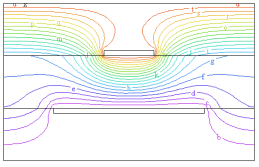

|
3d_extrusion_spec |

  
|
|
3d_extrusion_spec |
|
{ 3D_EXTRUSION_SPEC.PDE
This descriptor is a demonstration of the grammar of 3D extrusions.
It is a completion of the 3D specification example shown in
"Help | Technical Notes | Extrusions in 3D".
It describes a strip capacitor fabricated as a sandwich of
air | metal | glass | metal | air.
Click "Controls->Domain Review" to watch the domain construction process.
See the sample problem "3D_Capacitor" for a somewhat more complicated
and interesting version.
}
TITLE '3D Extrusion Spec'
SELECT regrid=off { for quicker solution }
COORDINATES CARTESIAN3
DEFINITIONS Kdiel= 6 Kmetal=1e6 Kair=1 K = Kair { default to Kair } V0 = 0 V1 = 1
VARIABLES V
EQUATIONS V: DIV(K*GRAD(V)) = 0 |
 |
EXTRUSION
SURFACE "Bottom" Z=0
LAYER "Bottom Air"
SURFACE "Bottom Air - Metal" Z=0.9
LAYER "Bottom Metal"
SURFACE "Bottom Metal - Dielectric" Z=1
LAYER "Dielectric"
SURFACE "Top Metal - Dielectric" Z=2
LAYER "Top Metal"
SURFACE "Top Metal - Air" Z=2.1
LAYER "Top Air"
SURFACE "Top" Z=3
BOUNDARIES
SURFACE "Bottom" VALUE(V)=0
SURFACE "Top" VALUE(V)=1
REGION 1 { this is the outer boundary of the system }
LAYER "Dielectric" K = Kdiel { all other layers default to Kair }
START(0,0)
LINE TO (5,0) TO (5,5) TO(0,5) to close
LIMITED REGION 2 { this region exists only in the "bottom metal" layer,
and describes the larger plate }
LAYER "Bottom Metal" K = Kmetal
START(1,0)
LAYER "Bottom Metal" VALUE(V)=V0
LINE TO (4,0)
LAYER "Bottom Metal" NATURAL(V)=0
Line TO (4,5) TO (1,5) to close
LIMITED REGION 3 { this region exists only in layer "Top Metal",
and describes the smaller plate }
LAYER "Top Metal" K = Kmetal
START(2,0)
LINE TO (3,0) TO (3,5)
LAYER "Top Metal" VALUE(V)=V1
LINE TO (2,5)
LAYER "Top Metal" NATURAL(V)=0
LINE to close
SELECT painted
PLOTS
CONTOUR(V) ON X=2.5 as "V on X-cut"
CONTOUR(V) ON Y=2.5 as "V on Y-cut"
CONTOUR(V) ON Z=1.5 as "V on Z-cut"
GRID(x,z) ON Y=2.5 paintregions nolines as "Region Map"
GRID(x,z) ON Y=2.5 paintmaterials nolines as "Material Map"
GRID(x,y,z) ON LAYER 2 ON REGION 2 as "Bottom Plate"
GRID(x,y,z) ON "Top Metal" ON REGION 3 as "Top Plate"
END
Page url: index.html?usage_3d_domains_3d_extrusion_spec.html